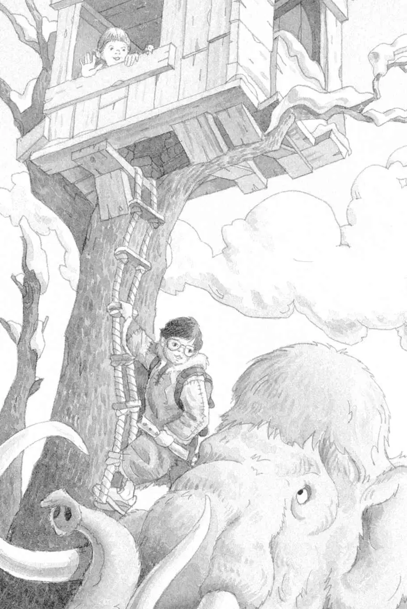

The sabertooth crept forward.
Jack stared in horror.
“Play the flute,” whispered Annie.
Is she nuts? Jack thought.
“Try!” said Annie.
Jack held the mammoth-bone flute to his lips. He blew.
The flute made a strange sound.
The tiger froze. He glared at Jack.
Jack’s hands shook.
The tiger growled. He took another step.
The mammoth roared and stomped the ground.
“Play it!” said Annie. “Keep playing!”
Jack blew again.
The sabertooth froze again.
Jack kept blowing until he ran out of breath.
The tiger snarled.
“He’s still here,” whispered Annie. “Keep it up.”
Jack closed his eyes. He took a deep breath. Then he blew as hard and as long as he could. He covered and uncovered the holes on the bone.
The music sounded strange—as if it were coming from another world.
“He’s leaving!” Annie whispered.
Jack raised his eyes. The sabertooth was slinking off toward the cliffs.
“We did it!” said Annie.
Jack lowered the flute. He felt very tired.
The mammoth waved her trunk happily.
“To the tree house, Lulu,” said Annie.
The woolly mammoth snorted. Then she lumbered over to the tallest tree.
From the back of the mammoth, Jack grabbed the rope ladder. He held it for Annie.
She stroked the mammoth’s giant ear. “Bye, Lulu. Thank you,” she said.
Annie grabbed the rope ladder. Then she started up. Peanut climbed up, too.
After they disappeared into the tree house, Jack climbed onto the ladder.
He looked back at the woolly mammoth. “Bye, girl,” he said. “Go home now. And watch out for the sabertooth.”

The mammoth walked away into the sunset.
When Jack couldn’t see her anymore, he started up the rope ladder. He pulled himself into the tree house.
“Ta-da!” said Annie. She handed the Pennsylvania book to Jack.
Jack smiled. Now he was positive they had found the third M thing. Their mission was complete.
“Before we leave, we have to give our coats back,” said Annie.
“Oh right,” said Jack.
They took off their reindeer-skin coats and dropped them to the ground.
“Brrr!” said Annie. “I hope the Cro-Magnon people find them.”
Jack stared out the window. He wanted to take one last look at the prehistoric world.
The sun was setting behind the hills. Four people were crossing the snowy plain. It was the Cro-Magnon family.
“Hey!” shouted Annie.
“Shhh!” said Jack.
The Cro-Magnons stopped and peered in Annie and Jack’s direction.
“We left your reindeer skins! Down there!” Annie pointed to the ground.
The tallest person stepped forward and raised a spear.
“Time to go,” said Jack.
He grabbed the Pennsylvania book. He found the picture of Frog Creek and pointed at it. “I wish we could go home,” he said.
“Good-bye! Good luck!” Annie called, waving out the window.
The wind started to blow. And the tree house started to spin.
It spun faster and faster.
Then everything was still.
Absolutely still.